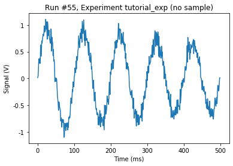
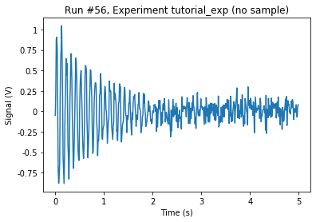
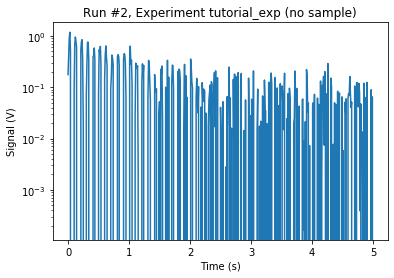
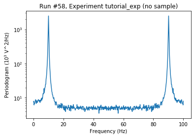
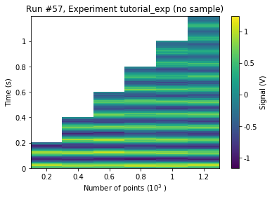

A ParameterWithSetpoints Example with Dual Setpoints¶
In this example we consider a dummy instrument that can return a time trace or the DFT (magnitude square) of that trace. The setpoints are accounted for in an easy way.
[1]:
import matplotlib.pyplot as plt
import numpy as np
from qcodes import Measurement, initialise_database, new_experiment, load_by_id
from qcodes.instrument.base import Instrument, Parameter
from qcodes.instrument.parameter import ParameterWithSetpoints, expand_setpoints_helper
from qcodes.dataset.plotting import plot_by_id
import qcodes.utils.validators as vals
[2]:
def timetrace(npts: int, dt: float) -> np.ndarray:
"""
A very realistic-looking signal
"""
#freq = 10/(dt*npts)
#decay = 1/(dt*npts)
freq = 10
decay = 1
time = np.linspace(0, npts*dt, npts, endpoint=False)
signal = np.exp(-decay*time)*np.sin(2*np.pi*freq*time)
noise = 0.1*np.random.randn(npts)
return signal + noise
[3]:
class TimeTrace(ParameterWithSetpoints):
def get_raw(self):
npts = self.root_instrument.npts()
dt = self.root_instrument.dt()
return timetrace(npts, dt)
class Periodogram(ParameterWithSetpoints):
def get_raw(self):
npts = self.root_instrument.npts()
dt = self.root_instrument.dt()
tt = self.root_instrument.trace()
return np.abs(np.fft.fft(tt))**2
class TimeAxis(Parameter):
def get_raw(self):
npts = self.root_instrument.npts()
dt = self.root_instrument.dt()
return np.linspace(0, dt*npts, npts, endpoint=False)
class FrequencyAxis(Parameter):
def get_raw(self):
npts = self.root_instrument.npts()
dt = self.root_instrument.dt()
return np.linspace(0, 1/dt, npts)
class OzzyLowScope(Instrument):
def __init__(self, name, **kwargs):
super().__init__(name, **kwargs)
self.add_parameter(name='npts',
initial_value=500,
label='Number of points',
get_cmd=None,
set_cmd=None)
self.add_parameter(name='dt',
initial_value=1e-3,
label='Time resolution',
unit='s',
get_cmd=None,
set_cmd=None)
self.add_parameter(name='time_axis',
label='Time',
unit='s',
vals=vals.Arrays(shape=(self.npts,)),
parameter_class=TimeAxis)
self.add_parameter(name='freq_axis',
label='Frequency',
unit='Hz',
vals=vals.Arrays(shape=(self.npts,)),
parameter_class=FrequencyAxis)
self.add_parameter(name='trace',
label='Signal',
unit='V',
vals=vals.Arrays(shape=(self.npts,)),
setpoints=(self.time_axis,),
parameter_class=TimeTrace)
self.add_parameter(name='periodogram',
label='Periodogram',
unit='V^2/Hz',
vals=vals.Arrays(shape=(self.npts,)),
setpoints=(self.freq_axis,),
parameter_class=Periodogram)
[4]:
osc = OzzyLowScope('osc')
[5]:
initialise_database()
new_experiment(name='tutorial_exp', sample_name="no sample")
[5]:
tutorial_exp#no sample#12@/home/vsts/experiments.db
---------------------------------------------------
Measurement 1: Time Trace¶
[6]:
timemeas = Measurement()
timemeas.register_parameter(osc.trace)
osc.dt(0.001)
with timemeas.run() as datasaver:
datasaver.add_result(*expand_setpoints_helper(osc.trace))
dataid = datasaver.run_id
Starting experimental run with id: 55
[7]:
_ = plot_by_id(dataid)

[8]:
osc.dt(0.01) # make the trace 10 times longer
with timemeas.run() as datasaver:
datasaver.add_result(*expand_setpoints_helper(osc.trace))
dataid = datasaver.run_id
Starting experimental run with id: 56
[9]:
_ = plot_by_id(dataid)

Measurement 2: Periodogram¶
[10]:
freqmeas = Measurement()
freqmeas.register_parameter(osc.periodogram)
osc.dt(0.01)
with freqmeas.run() as datasaver:
datasaver.add_result(*expand_setpoints_helper(osc.periodogram))
dataid = datasaver.run_id
Starting experimental run with id: 57
[11]:
axs, cbax = plot_by_id(dataid)
aa = axs[0]
aa.set_yscale('log')

Just for the fun of it, let’s make a measurement with the averaged periodogram.
[12]:
no_of_avgs = 100
with freqmeas.run() as datasaver:
temp_per = osc.periodogram()
for _ in range(no_of_avgs-1):
temp_per += osc.periodogram()
datasaver.add_result((osc.periodogram, temp_per/no_of_avgs),
(osc.freq_axis, osc.freq_axis.get()))
dataid = datasaver.run_id
Starting experimental run with id: 58
[13]:
axs, cbax = plot_by_id(dataid)
aa = axs[0]
aa.set_yscale('log')

Measurement 3: 2D Sweeping¶
[14]:
meas = Measurement()
meas.register_parameter(osc.npts)
meas.register_parameter(osc.trace, setpoints=[osc.npts], paramtype='numeric')
with meas.run() as datasaver:
osc.dt(0.001)
for npts in [200, 400, 600, 800, 1000, 1200]:
osc.npts(npts)
datasaver.add_result(*expand_setpoints_helper(osc.trace),
(osc.npts, osc.npts()))
dataid = datasaver.run_id
Starting experimental run with id: 59
[15]:
_ = plot_by_id(dataid)

[ ]: